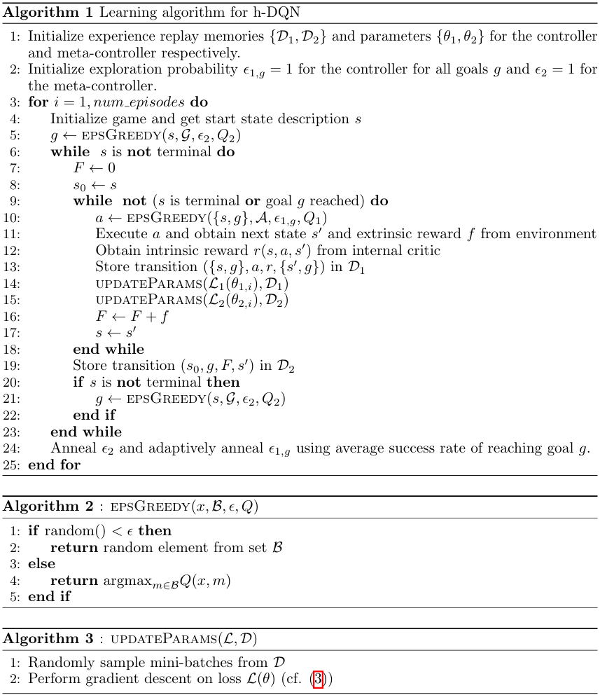

目次
Overview
"Hierarchical Deep Reinforcement Learning: Integrating Temporal Abstraction and Intrinsic Motivation" は、h-DQN (階層型Deep Q-Network) を提案しています。このモデルは、異なる時間スケールで動作する階層的な価値関数を統合することで、内発的に動機づけられた探索行動を促し、報酬が遅延する環境において効率的な探索を実現します。このページでは、その内容の一部を紹介します。
Abstract
- スパースなフィードバックの環境で行動を学ぶことは、強化学習において大きな課題である。
- 探索が不十分で、エージェントがロバストな方策を学習できないことが多い。
- 内発的に動機づけられたエージェントは、新たな行動を探索できる。
- h-DQN（階層型DQN）は、異なる時間スケールで動作する階層的な行動価値関数と、内発的動機づけを用いた深層強化学習を統合するフレームワークである。
- 上位レベルのQ関数は、内発的目標に基づいた方策を学習し、下位レベルの関数は与えられた目標を達成するための基本的な行動に基づいた方策を学習する。
- 提案手法の有効性を、非常にスパースで遅延したフィードバックが存在する2つの問題で実証する：（1）複雑で離散的な確率的意思決定プロセス、（2）古典的なATARIゲーム「モンテズマの復讐」。
Conclusion
- h-DQNを提案し、異なる時間スケールで動作する階層的な価値関数を持つフレームワークを構築した。
- 価値関数を時間的に分解することで、エージェントが内発的に動機づけられた行動を行い、遅延報酬のある環境で効率的な探索が可能になる。
- エンティティと関係の空間で内発的動機をパラメータ化することにより、時間的に拡張された探索を行うエージェントを構築する有望な手段を提供できる。
- 将来的には、h-DQNにおける目標の代替的なパラメータ化の可能性も探求する予定である。
- 現在のフレームワークには、以下のような欠けている要素がある：（1）生のピクセルデータからオブジェクトを自動的に分離する機能、（2）短期記憶機能。
- vanilla DQNで学習された状態抽象化は、構造化や十分な構成性が不足している。
- 最近の研究では、深層生成モデルを使用してピクセルデータからオブジェクトや姿勢、位置などの多様な要因を分離する方法が検討されている。
- 本研究が、h-DQNと画像生成モデルの組み合わせの動機づけとなることを期待する。
- 長期的な依存関係に対応するために、エージェントが過去の目標、行動、表現の履歴を保存する必要がある。
- 最近の研究では、強化学習と再帰型ネットワークを組み合わせた手法も検討されている。
- より複雑な非マルコフ環境に対応するためには、柔軟なエピソード記憶モジュールを取り入れることが必要である。
Model
- 状態 \( s \in S \)、行動 \( a \in A \)、および遷移関数 \( T : (s, a) \rightarrow s' \) で表されるマルコフ決定過程（MDP）を考える。
- この枠組みで動作するエージェントは外部環境から状態 \( s \) を受け取り、行動 \( a \) を取ることで新たな状態 \( s' \) へ遷移する。
- 外因的報酬関数を \( F : (s) \rightarrow R \) と定義する。
- エージェントの目標は、この関数を長期にわたって最大化することである。
- 例）エージェントの生存時間やゲームのスコアなど。
エージェント
- MDPにおける効果的な探索は、良い制御方策を学習するうえで重要な課題である。
- \(\varepsilon\)-greedyのような手法は局所的な探索には有効だ、状態空間の異なる領域を探索する動機をエージェントに与えることはできない。
- この問題に対処するために、目標 \( g \in G \) の概念を利用し、エージェントに内発的な動機を与える。
- エージェントは、外的な累積報酬和を最大化するために、目標の順序を設定し、それを達成することに集中する。
- 各目標 \( g \) に対する方策 \( \pi_g \) を定義するために、オプションの時間的抽象化を利用する。
- エージェントは、これらのオプション方策を学習すると同時に、追従するべき最適な目標の順序も学習する。
- 各 \( \pi_g \) を学習するために、エージェントには批評者（クリティック）があり、エージェントが目標を達成できるかどうかに基づいて内因的な報酬を提供する。
- 以下の図に示すように、エージェントはコントローラとメタコントローラからなる2段階の階層構造を使用する。

時間的抽象化
- メタコントローラは状態 \( s_t \) を受け取り、目標 \( g_t \in G \) を選択する。ここで、\( G \) は現在のすべての可能な目標の集合を示す。
- 次に、コントローラが \( s_t \) と \( g_t \) を用いて行動 \( a_t \) を選択する。
- 目標 \( g_t \) は、達成されるか終端状態に到達するまで、次の数ステップにわたって維持される。
- 内部の批評者（クリティック）は、目標が達成されたかどうかを評価し、コントローラに適切な報酬 \( r_t(g) \) を提供する役割を担う。
- コントローラの目的関数は、内的な累積報酬和 \( R_t(g) = \sum_{t'=t}^{\infty} \gamma^{t'-t} r_{t'}(g) \) を最大化することである。
- 同様に、メタコントローラの目的は外的な累積報酬和 \( F_t = \sum_{t'=t}^{\infty} \gamma^{t'-t} f_{t'} \) を最適化することである（ここで、\( f_t \) は環境から受け取る報酬信号）。
- この設定は、適応度を最大化するために最適な報酬関数の空間を最適化することに似ていると考えることもできる。
- この場合、報酬関数は動的であり、目標の連続的な履歴に時間的に依存している。
- 上で示した図は、後続の時間ステップにわたるエージェントの階層構造の使用例を示している。
時間的抽象化を用いた深層強化学習
- コントローラとメタコントローラの両方の方策を学習するために、Deep Q-Learning フレームワークを使用する。具体的には、コントローラは以下のQ値関数を推定する：
- ここで、\( g \) は状態 \( s \) におけるエージェントの目標であり、\( \pi_{a|g} = P(a|s, g) \) は行動方策を表す。
- 同様に、メタコントローラに対しては次のようになる：
- ここで、\( N \) はコントローラが現在の目標を達成するまでの時間ステップ数を表し、\( g' \) は状態 \( s_{t+N} \) におけるエージェントの目標、\( \pi_g = P(g|s) \) は目標に対する方策を示す。
- 重要なのは、\( Q_2 \) によって生成される遷移 \( (s_t, g_t, f_t, s_{t+N}) \) は、\( Q_1 \) によって生成される遷移 \( (s_t, a_t, g_t, r_t, s_{t+1}) \) よりも遅い時間スケールで実行されるという点である。
- 非線形関数近似器のパラメータ \(\theta\) を使用して、 DQN という形で \( Q^*(s, g) \approx Q(s, g; \theta) \) を表現できる。
- 各 \( Q \in \{Q_1, Q_2\} \) は、対応する損失関数 \( L_1(\theta_1) \) と \( L_2(\theta_2) \) を最小化することで学習される。
- 次に、\( Q_1 \) の損失関数は次のように表せる：
- ここで、\( i \) は学習イテレーション番号を表し、\( y_{1,i} = r + \gamma \max_{a'} Q_1(s', a'; \theta_{1,i-1}, g) \) である。
- 損失関数を最適化する際には前のイテレーションのパラメータ \( \theta_{1,i-1} \) を固定する。パラメータ \( \theta_1 \) は次の勾配を用いて最適化できる：
- 損失関数 \( L_2 \) とその勾配は同様の手順で導出できる。
\begin{align}
Q^*_1(s, a; g) &= \max_{\pi_{a|g}} \mathbb{E}\left[\sum_{t' = t}^{\infty} \gamma^{t' - t} r_{t'} \, | \, s_t = s, a_t = a, g_t = g, \pi_{a|g}\right] \\
&= \max_{\pi_{a|g}} \mathbb{E}\left[r_t + \gamma \max_{a_{t+1}} Q^*_1(s_{t+1}, a_{t+1}; g) \, | \, s_t = s, a_t = a, g_t = g, \pi_{a|g}\right]
\end{align}
\begin{align}
Q^*_2(s, g) = \max_{\pi_g} E\left[\sum_{t'=t}^{t+N} \gamma^{t'-t} f_{t'} \mid s_t = s, g_t = g, \pi_g\right]
\end{align}
\begin{align}
L_1(\theta_{1,i}) = E_{(s, a, g, r, s') \sim D_1} \left[(y_{1,i} - Q_1(s, a; \theta_{1,i}, g))^2\right]
\end{align}
\begin{align}
\nabla_{\theta_{1,i}} L_1(\theta_{1,i}) = E_{(s, a, r, s') \sim D_1} \left[ \left( r + \gamma \max_{a'} Q_1(s', a'; \theta_{1,i-1}, g) - Q_1(s, a; \theta_{1,i}, g) \right) \nabla_{\theta_{1,i}} Q_1(s, a; \theta_{1,i}, g) \right]
\end{align}
学習アルゴリズム
- h-DQNのパラメータは異なる時間スケールでの確率的勾配降下法を用いて学習される。
- コントローラからの経験（または遷移）は毎ステップ収集されるが、メタコントローラからの経験は、コントローラが終了する（目標が再選択されるかエピソードが終了する）時にのみ収集される。
- 新しい目標 \( g \) は \( \epsilon \)-greedy方式で選ばれ（アルゴリズム1および2）、学習の進行に伴い探索確率 \( \epsilon_2 \) が減少する（初期値は1）。
- コントローラでは、毎ステップごとに目標をもとに探索確率 \( \epsilon_{1,g} \) を使用して行動が選択され、これは目標 \( g \) を達成する現在の経験的成功率に依存する。
- モデルパラメータ \( (\theta_1, \theta_2) \) は、リプレイメモリ \( D_1 \) と \( D_2 \) から経験を引き出して定期的に更新される（アルゴリズム3参照）。 
Experiments
Discrete stochastic decision process
- 各状態を探索のための可能な目標として考える。
- これにより、エージェントが新しい状態を訪れるよう促され（それが目標に選ばれるたびに）、最適な方策を学習することができる。
- 各目標に対して、エージェントは対応する状態に到達した場合にのみ、正の内因的報酬を受け取る。
ATARI game with delayed rewards
- エージェントは、自身で鍵を取得することの利点を学習する前に、シーンの意味ある部分を探索するための内発的動機を必要とする。
- 発達心理学およびオブジェクト指向MDPに触発され、この環境での目標をパラメータ化するために、シーン内のエンティティやオブジェクトを使用した。
- 視覚シーン内のオブジェクトの教師なし検出は、コンピュータビジョンにおける未解決の問題だが、画像や動きデータから直接オブジェクトを取得する技術が最近進展している。
- 本研究では、妥当なオブジェクト候補を提供するカスタムオブジェクト検出器を作成した。
- コントローラとメタコントローラは畳み込みニューラルネットワークであり、生のピクセルデータから表現を学習する。
- 内部の批評者（クリティック）は、\(entity_1\) \(relation\) \(entity_2\)空間で定義され、\(relation\)はエンティティの構成に対する関数である。
- 本研究の実験では、エージェントは任意の\(entity_2\)を自由に選択できる。
- たとえば、エージェントがドアなどの別のエンティティに到達すると、目標を達成したとみなされ、報酬を受け取る。
- この関係的な内因的報酬の概念は、他の設定にも一般化可能である。
- たとえば、ATARIのゲーム「アステロイド」では、弾丸が小惑星に到達したときや、単に船が小惑星に到達しないときにエージェントに報酬を与えることができる。
- 「パックマン」のゲームでは、画面上のペレットに到達した場合にエージェントに報酬を与えることができる。
- 最も一般的な場合、エンティティが与えられた際にモデルがパラメータ化された内因的報酬関数を発展させることが可能である。